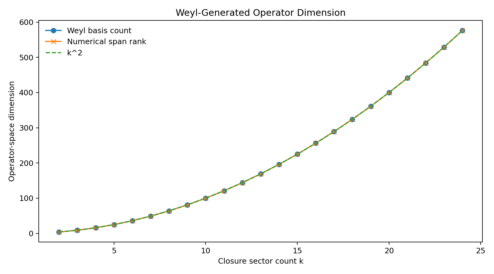
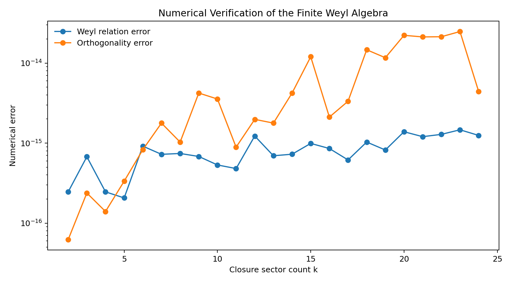

Entry 05
Weyl-Generated Closure Algebra
Entry 04 established that the Fibonacci-square equation
entry_05
Outputs folder: output
Figures
Click any figure to enlarge it.

weyl_dimension_scaling.png
{kind=link}

weyl_numerical_errors.png
{kind=link}
Tables
Embedded previews of CSV/TSV outputs with links to the full raw files.
| k | maximum_adjoint_law_error |
|---|---|
| 2 | 3.463824224941973e-16 |
| 3 | 2.551996275269413e-15 |
| 4 | 1.8813381107823187e-15 |
| 5 | 1.3797864742850999e-15 |
| 6 | 1.4667238758708e-14 |
| 7 | 1.168652851844005e-14 |
Preview only — rows truncated. Open full file
| shift_index_a | phase_index_b | category | category_code |
|---|---|---|---|
| 0 | 0 | identity | 0 |
| 0 | 1 | pure_phase | 2 |
| 0 | 2 | pure_phase | 2 |
| 0 | 3 | pure_phase | 2 |
| 0 | 4 | pure_phase | 2 |
| 0 | 5 | pure_phase | 2 |
Preview only — rows truncated. Open full file
| k | off_diagonal_inverse_pairs_tested | products_generating_self_relation | self_relation_regeneration_fraction | maximum_matrix_unit_error |
|---|---|---|---|---|
| 2 | 2 | 2 | 1.0 | 0.0 |
| 3 | 6 | 6 | 1.0 | 0.0 |
| 4 | 12 | 12 | 1.0 | 0.0 |
| 5 | 20 | 20 | 1.0 | 0.0 |
| 6 | 30 | 30 | 1.0 | 0.0 |
| 7 | 42 | 42 | 1.0 | 0.0 |
Preview only — rows truncated. Open full file
| k | maximum_multiplication_law_error |
|---|---|
| 2 | 2.4492935982947064e-16 |
| 3 | 1.7176975763650377e-15 |
| 4 | 1.2726902864698882e-15 |
| 5 | 1.320444373401276e-15 |
| 6 | 1.0094808750812607e-14 |
| 7 | 9.469225349247918e-15 |
Preview only — rows truncated. Open full file
| k | nonidentity_elements_tested | products_regenerating_identity | identity_regeneration_fraction | maximum_identity_regeneration_error |
|---|---|---|---|---|
| 2 | 3 | 3 | 1.0 | 3.463824224941973e-16 |
| 3 | 8 | 8 | 1.0 | 2.5310893636949487e-15 |
| 4 | 15 | 15 | 1.0 | 1.8813381107823187e-15 |
| 5 | 24 | 24 | 1.0 | 1.6773188315764163e-15 |
| 6 | 35 | 35 | 1.0 | 1.4895204919483637e-14 |
| 7 | 48 | 48 | 1.0 | 1.372686500199609e-14 |
Preview only — rows truncated. Open full file
| k | k_squared | weyl_basis_count | numerical_span_rank | weyl_relation_error | maximum_orthogonality_error | maximum_nonidentity_trace |
|---|---|---|---|---|---|---|
| 2 | 4 | 4 | 4 | 2.4492935982947064e-16 | 6.123233995736766e-17 | 1.2246467991473532e-16 |
| 3 | 9 | 9 | 9 | 6.740105962128839e-16 | 2.3696319859777817e-16 | 7.108895957933346e-16 |
| 4 | 16 | 16 | 16 | 2.4492935982947064e-16 | 1.3877787807814457e-16 | 5.551115123125783e-16 |
| 5 | 25 | 25 | 25 | 2.054026739179923e-16 | 3.330902373593781e-16 | 5.117875266520903e-16 |
| 6 | 36 | 36 | 36 | 9.146671665975724e-16 | 8.262691849897772e-16 | 4.957615109938664e-15 |
| 7 | 49 | 49 | 49 | 7.230212181650778e-16 | 1.7763600628681822e-15 | 4.095805194048e-15 |
Preview only — rows truncated. Open full file
Source files
Theoretical notes
Data files
No files in this category.
Other artifacts
No files in this category.